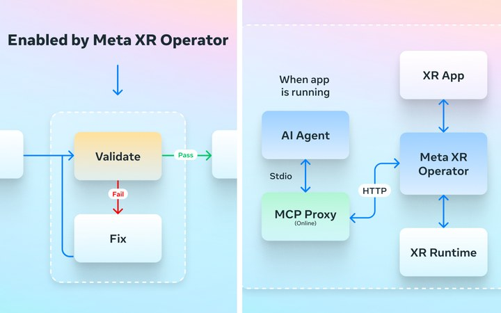

Meta XR Operator
Creator and lead, 2025 to present
The XR industry's first AI-agent interface, built on OpenXR. A cross-platform C++ API layer exposes spatial state as Model Context Protocol tools, with an MCP server and proxy, engine integration, and an agentic build-test-verify loop on top.
An agent can play a real, unmodified open-source VR action game the way a person does: it explores the live app, writes a skill, then compiles a player script that runs the observe-act loop at 23 Hz with 1 to 16 ms per call.